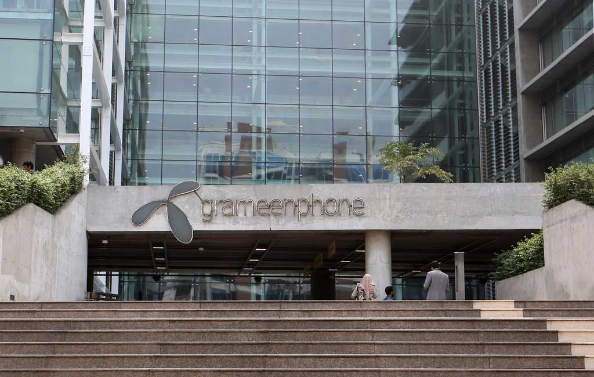

I am currently working as an adjunct faculty in Military Institute of Science and Technology in the department of Electrical, Electronic and Communication Engineering. Additionally, I am a part time research engineer at Visual Information Processing research lab at MIST.
I have completed my B.Sc. in Electrical, Electronic and Communication Engineering (EECE) from the Military Institute of Science and Technology (MIST), affiliated with Bangladesh University of Professionals (BUP), Dhaka, Bangladesh on January 2021. Download CV
| 2021 | Joined as Adjunct Faculty in MIST |
| 2021 | Graduated from MIST and secured a position of 2nd in the entire department |
| 2020 | Recipient of Dean’s List Scholarship for Outstanding Academic Results |
| 2019 | 1st Runner-up of IEEE Conference Project Presentation |
| 2019 | Recipient of Dean’s List Scholarship for Outstanding Academic Results |
| 2018 | Recipient of Dean’s List Scholarship for Outstanding Academic Results |
| 2017 | Recipient of Dean’s List Scholarship for Outstanding Academic Results |
House No: 25-30
Plot # 30, Road # 7,
Line:N-1, N-2, Block-J
Eastern Housing, 2nd Phase, Mirpur, Dhaka North, Dhaka-1216
+8801537012420
|
Adjunct Faculty Military Institute of Science and Technology Course Taken
|
|
Research Engineer Visual Information Processing(VIP) Lab, MIST Projects
|
Industrial TraineeGrameenphone Ltd. Skills
|
Industrial TraineeBDcom online limitedTasks
|
|
Senior Mentor : App Development MIST Innovation Club (MIC) Responsibilities
|
| Duration: | 4 Years (Jan 2017 - Jan 2021) |
| Degree: | Bachelor of Science (B.Sc.) |
| Major: | Communication |
| CGPA: | 3.98/4.00 |
| Department: | Electrical, Electronic and Communication Engineering (EECE) |
| Faculty: | Electrical and Computer Engineering (ECE) |
| Institute: | Military Institute of Scienc and Technology (MIST) |
| University: | Bangladesh University of Professionals (BUP) |
My research interests and experiences are mostly in the machine learning and deep learning domain along with computer vision applications. I have done several projects and research work computer vision and convolutional neural networks. I have keen interest on generative adversarial network and time series analysis on which I have on going projects.